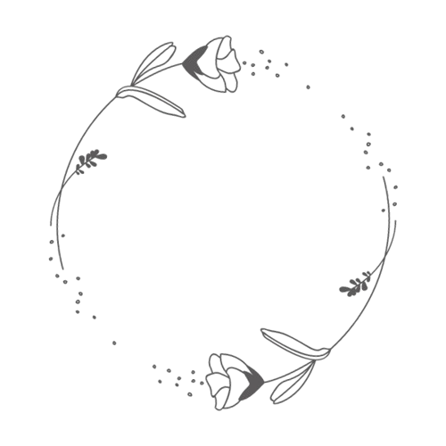

Annisa
RD
teruntuk kamu yang di tahun
ini berusia 23 tahun
Click here!
Kamu, yang kehadirannya
mampu menyejukkan hati
Bagaimana bisa aku melupakan seseorang
yang membuatku berpikir
bahwa aku mampu melakukan segalanya
╰(*°▽°*)╯
👉Heeyy, click me👈